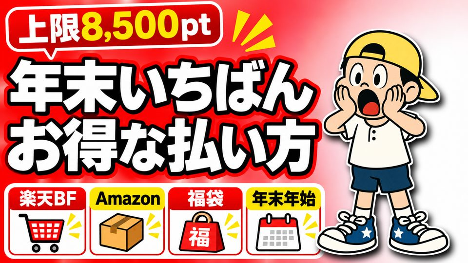
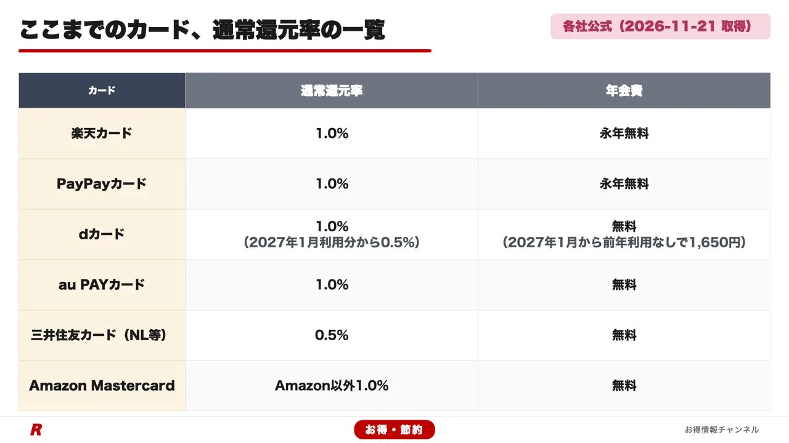
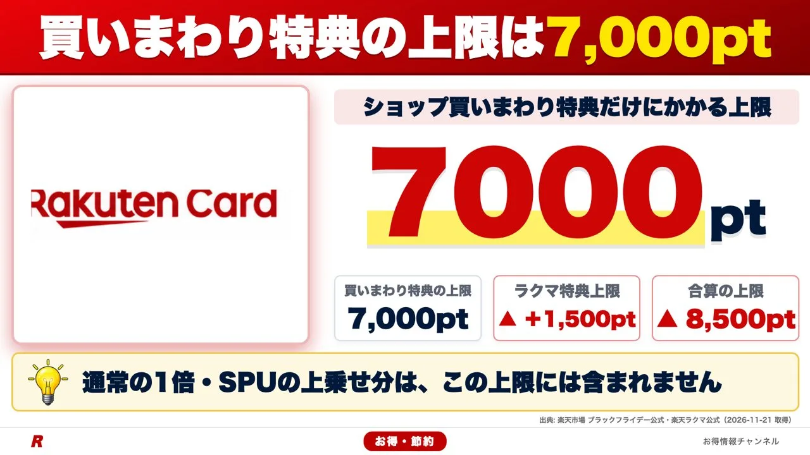
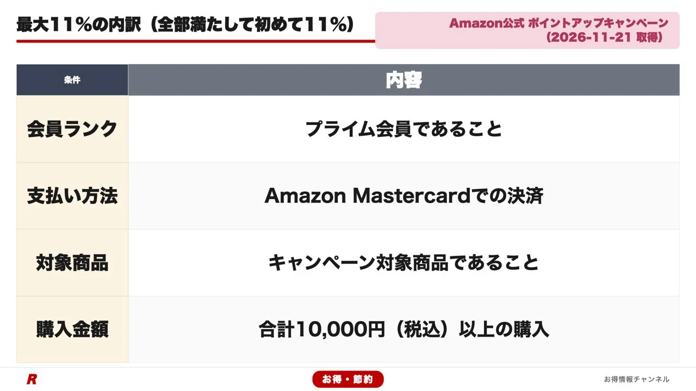
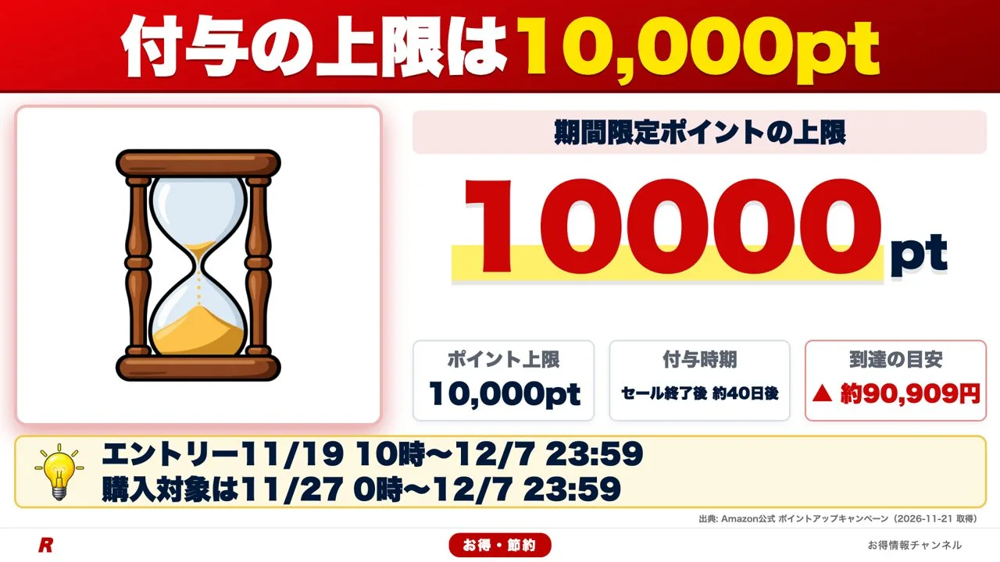
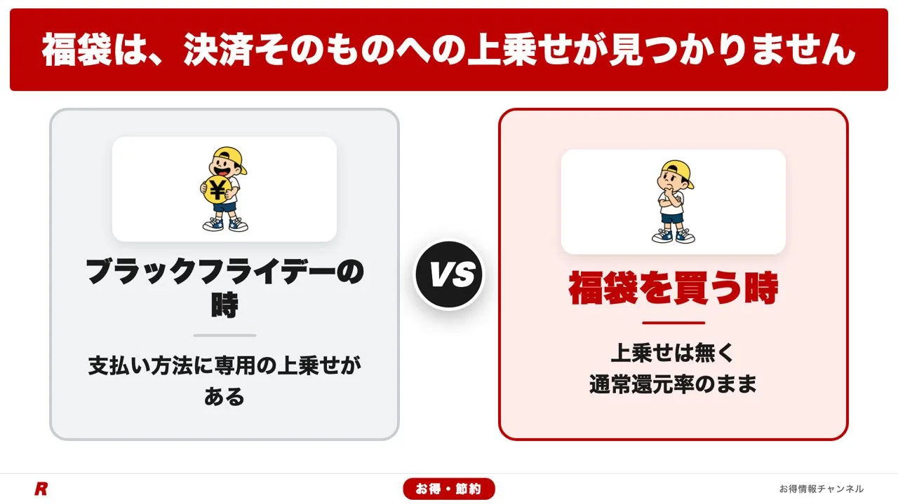
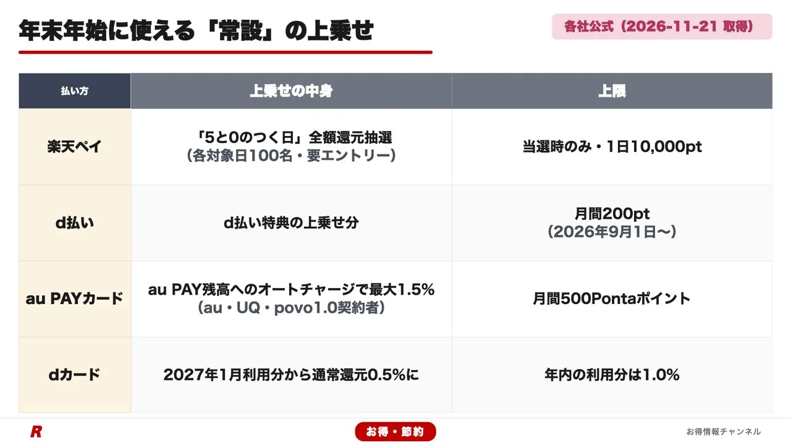
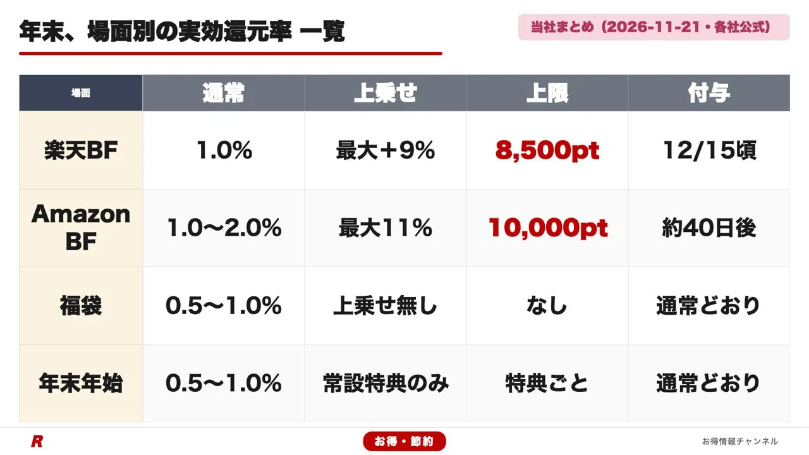

年末の楽天ブラックフライデーとAmazonブラックフライデー、還元率を比較すると、上限ポイントは楽天市場の買いまわり特典とラクマ特典を合わせて8,500pt、Amazonのポイントアップキャンペーンが10,000ptです。福袋や年末年始のふだんの買い物には、支払い方法そのものへの特別な上乗せはありません。この記事では、2026年11月21日に各社の公式ページで確認した、場面ごとの還元条件とエントリー期限をまとめます。

▶ この記事の内容を動画で見る（お金の総合チャンネル）01基本の還元率、まず土台をそろえる
ネット通販はサイト発行カードが基本的に有利です。楽天市場なら楽天カードで、通常還元率は1.0%（100円で1ポイント）。Amazonなら、三井住友カードが発行するAmazon Mastercardで、プライム会員は2.0%、会員以外でも1.5%です。
PayPayカード・dカード・au PAYカードは、年会費無料のカードの中では通常還元率1.0%で横並びです。ただしdカードだけは、2027年1月の利用分から100円で1ポイント（1.0%）が200円で1ポイント（0.5%）に下がります。前の年に1度も使わないと、年会費1,650円もかかるようになります。三井住友カード（NL等）の通常還元率は0.5%です。

この記事でいう「実効還元率」は、通常還元にキャンペーンの上乗せを足し、上限があれば頭打ちにした、実際に受け取れる割合のことです。通常還元とキャンペーン上乗せを混ぜて1つの数字にしないことが、場面ごとの比較のポイントです。
02楽天ブラックフライデー、上限は8,500pt
楽天市場のブラックフライデーは、ポイント対象の購入期間が2026年11月19日20時から11月25日1時59分まで、エントリー期間は11月12日10時から11月25日1時59分までです。
ショップ買いまわり特典は、1ショップで1,000円（税込）以上の購入が1店舗としてカウントされ、2店舗目から1店舗ごとに上乗せが1%ずつ増えます。この買いまわり特典ポイントの獲得上限は7,000ポイントです。ラクマでの購入を合わせると、別エントリーで1,500ポイントが上乗せされ、合わせた上限は8,500ポイントになります。

注意エントリーをしていないと、買い物をしても特典ポイントは0ポイントです。市場の買いまわりとラクマの特典は別々のエントリーなので、両方済ませておく必要があります。
買いまわり特典ポイントの付与は12月15日頃の予定です。常設プログラムのSPU（最大18.5倍、基本1倍を含む）は、買いまわり特典とは別枠でそのまま加算されます。
03Amazonブラックフライデー、最大11%の条件
Amazonブラックフライデーは、先行セールが11月27日0時から、本番が11月30日0時から12月7日23時59分までです。
Amazon公式のポイントアップキャンペーンには「対象商品につき最大11%も」と書かれていますが、これはプライム会員であること、Amazon Mastercardで決済すること、キャンペーン対象商品であること、合計10,000円（税込）以上購入すること、この4つをすべて満たした場合の数字です。Apple製品など一部の商品は対象外です。

追加ポイントの付与上限は10,000ポイントで、付与はセール終了後約40日後です。4つの条件を満たして11%が付く場合、上限の10,000ポイントに届くのは、対象商品の購入額がおよそ90,909円を超えたあたりからになります。

エントリーして合計10,000円以上購入すると、最大100,000ポイントが当たる大抽選会にも、追加の手続きなしで参加できます。
04福袋は通常還元率がそのまま結果になる
ビックカメラの「2027年福箱」など、確認した各社の福袋ページには、支払い方法そのものへの全国共通のポイント上乗せキャンペーンは見当たりませんでした。福袋を買うときの還元率は、第1章で見た通常還元率がそのまま結果になります。

複数の店の福袋を狙うときは、抽選予約の当選発表と購入期間がずれることに注意してください。ビックカメラの場合、当選発表は12月3日頃から、購入期間は12月4日から12月6日までです。購入期間中にまとめて決済が必要になるので、使うカードの利用枠を空けておきましょう。
05年末年始は常設キャンペーンの積み重ねが現実的
2026年12月に予定される「楽天大感謝祭」の公式ページは、2026年11月21日時点では前回開催分の終了ページのままで、新しい開催要項は公開されていません。民間の予想サイトには具体的な日付の記載もありますが、楽天の公式発表ではないため、本記事では確定情報として扱いません。
大型セールが無い「ふだんの年末年始」は、常設のキャンペーンを積み重ねるのが現実的です。

楽天ペイの「5と0のつく日」は、対象日ごとに抽選で100名に利用金額を全額還元する企画で、上限は1人1日10,000ポイントです。d払い特典の上乗せは、2026年9月1日からランクに関係なく月間200ポイントに統一されました。au PAYカードは、au PAY残高へのオートチャージで最大1.5%、上限は月間500ポイントです。1月の初売りをdカードで払うと、通常還元率は0.5%に下がります。12月の利用分までは1.0%のままなので、dカードで大きな買い物をするなら年内がおすすめです。
06よくある質問
楽天ブラックフライデーのエントリー期限はいつまでですか？
11月25日1時59分までです。ショップ買いまわりとラクマの特典は別々のエントリーなので、どちらも済ませておく必要があります。
Amazonブラックフライデーのポイントアップ、上限は何ポイントですか？
追加分の上限は10,000ポイントです。通常の買い物で付く通常ポイントは、この上限とは別枠です。
福袋を買うときにお得なカードはありますか？
支払い方法そのものへの全国共通の上乗せキャンペーンは見当たりませんでした。保有しているカードの中でいちばん還元率の高いもの（年会費無料のカードでは通常1.0%が目安）を使うのが結論です。
dカードの還元率はいつから下がりますか？
2027年1月の利用分からです。100円で1ポイント（1.0%）が、200円で1ポイント（0.5%）に下がります。前の年に1度も利用がないと、年会費1,650円もかかるようになります。
07まとめ：覚えておきたい2つの期限

結論楽天ブラックフライデーとAmazonブラックフライデーは、エントリーと条件達成で実効還元率が大きく変わります。福袋と年末年始は、基本の通常還元率がそのまま実効還元率になります。
- 楽天ブラックフライデーのエントリーは11月25日1時59分まで、上限は買いまわり7,000pt＋ラクマ1,500ptの合わせて8,500ptです。
- Amazonブラックフライデーは、プライム会員・Amazon Mastercard・対象商品・合計10,000円以上の4条件を満たして最大11%、上限は10,000ptです。
- 福袋と年末年始のふだんの買い物には、特別な上乗せはありません。保有カードの通常還元率（年会費無料のカードでは1.0%が目安）で選びます。
- 1月の初売りからは、dカードの通常還元率が0.5%に下がります。
還元率・上限は毎年変わるため、実際に買い物をする前に、各社の公式ページで最新の条件を確認してください。この記事の数字は2026年11月21日時点のものです。
年末はふるさと納税、12月31日までにやることや、新NISAの年内枠を使い切る手順もあわせて確認しておくと、年末のお金の手続きをまとめて片付けられます。